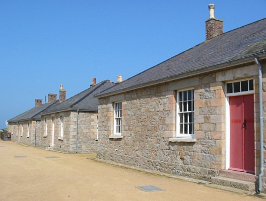

Le Ménage ès Feuvres,
Lé 4 dé septembre, 1982.
St Ouën,
 Dînmanche pâssé, j'eus l'pliaîsi dé r'mett' lé pid dans l'bel des bèrrexes dé La Grève dé Lé pour la preunmié fais dépis l'mais d'août, 1914. Ch'est vrai, sans doute, qué jé l's avais veues bein des fais dans la distance en pâssant par là, mais j'allis les saluer d'près dînmanche l'arlévée.
J'èrtcheins des bein pliaîsantes mémouaithes dé ches bèrrexes. J'tais soudard dans l'preunmié bataillon (lé bataillon du Ouêst) dé la Milice Rouoyale dépis 1908, mais j'fus nommé Commis Vicomte en févri, 1914, et exempté d'sèrvice dans la Milice par la louai. Mais quand ou fut mobilisée en août, 1914, et qué j'viyais touos l's autres en unniforme, j'avais tellement envie d'y'être étout qué jé d'mandis pèrmission d'sèrvi dans la Milice en même temps qué d'fonctionner comme Commis Vicomte, et man d'si m'fut accordé.
En août, 1914, lé bataillon du Ouêst 'tait dans les bèrrexes, la maîntchi faîsant la garde des côtes, et l'aut' maîntchi avait eune niet d'dormi d'dans. Ches-chîn avaient à lus l'ver à siex heuthes du matîn au son d'la biougl'ye pour l'exèrcice ("physical jerks", i' disaient en Angliais) ou aller nouer à l'ieau.
Les gens faîsaient d'lus mus pour nouos donner des séthées d'divèrtissement quand j'tions en bèrrexes pour la niet. Eune séthée , un groupe du "Y.M.C.A." vînt pour nouos donner un concèrt. Nou m'ttait l's habits d'travas ("fatigues" en Angliais) d'côté pour telle occâsion, et nou-s-allait au concèrt dans nos miyeurs habits.
Chutte séthée, touos les soudards tchi n'étaient pon d'sèrvice lé tou des côtes allîdrent au concèrt, à l'exception d'man fréthe Fraînque et mé. J'dînmes ès autres qué j'nouos en allions à la pratique du chant à l'Églyise dé St. Brélade, et i' nouos vîdrent sorti. J'n'allînmes pon bein liain, et quand j'feûnmes seux qu' touos l's aut's 'taient au concèrt, j'rentrînmes trantchilment et j'nouos mînmes à mêler les bottes, armes et habits d'touos les cheins dé nouot' maîntchi dans l'bâtisse nunmétho iun où'est qué j'tions louogis, pis j'fichînmes lé camp jusqu'à dgiex heuthes pour qué l's autres nouos vissent èrvénîn. Ma fîngre, j'en r'pathînmes d'eune belle sans êt' dêcouvèrts!
I' y'eut un tintamârre abominnabl'ye lé lendemain au matîn quand les garçons êprouvîdrent à lus habilyi dans lus habits "fatigues". I' restaient au liet jusqu'à la dreine minnute auprès qu' la biougl'ye avait sonné l'rêvillon, et i' fallait s'habilyi dêliêment pour prendre sa pliaiche à l'heuthe dans les rangs. Les hauts êprouvaient à mett' des braies tch'êtaient trop courtes, et les p'tits des braies tchi traînaient à tèrre. Les gros ventres (y'en avait parmi les miliciens!) êprouvaient à boutonner des braies tch'avaient la cheintuthe trop p'tite, et les maigres des braies tch'allaient deux fais l'tou d'lus, et pèrsonne né pouvait enduther des bottes tch'étaient trop grandes ou trop p'tites pour lus pids.
Comme ou pouvez bein vouos înmaginner, la bangnole n'eut pon lieu chutte matinnée-là! Pus qu' la maîntchi d's hommes lus mîndrent en rang tard et à la maîntchi habilyis. Iun tchi n'pouvait pon trouver ses braies arrivit en drâses. Un aut' tchi n'pouvait l'on trouver ses bottes sé mînt dans l'rang auve ses cauches. Un aut' arrivit atout rein qu'eune botte, et un aut' arrivit atout eune teunique tch'allait deux fais l'tou d'li et qu' les manches 'taient si longues qué nou n'li viyait pon d'mains! S'i' y'avaient pensé il éthaient peut mett' lus bouans habits tch'il' avaient au concèrt la séthée dé d'vant mais dans l'tîntamârre et la peux d'êt' tard à rêpondre à lus noms, i' n'y pensîdrent pon.
Lé Sèrgent 'tait au m'sespé, et trop mârri dans l'temps pour vaie l'humour dé la scène dévant li. Dé la carre dé m'n yi j'viyais l'Offici du jour sé touanner d'bord auve lé souôri sus sa fache.
Natuthelment, la tchestchion 'tait "Tch'est tch'était coupabl'ye d'aver mêlé touos l's habits?" Pèrsonne né l'savait, et pèrsonne né l'avait dêcouvèrt jusqu'à y'a dgiêx-huit ans. En 1964, en pâlant des bouans vièrs temps auve Ted Dart, dé Foligny House à St Aubîn, i' m'dit tch'il 'tait iun des cheins tch'avait ieu ses habits mêlés. Quand j'li dis qué ch'tait man fréthe Fraînque et mé tch'étaient les coupabl'yes, i' faillit à s'évanni d'surprînse! J'avions gardé l'ségret si bein qu' les miliciens d'chu temps-là tchi n'sont pus à ch't heu né l'ont janmais seu.
Tchi bouannes mémouaithes du vièr temps! Et j'peux dithe qué les bèrrexes pathaîssent aver pus d'attrait à ch't heu tch'il' en avaient en 1914, et j'sis content d'vaie tch'i' sont souos les bouans soins du National Trust pour tout janmais
Viyiz étout: